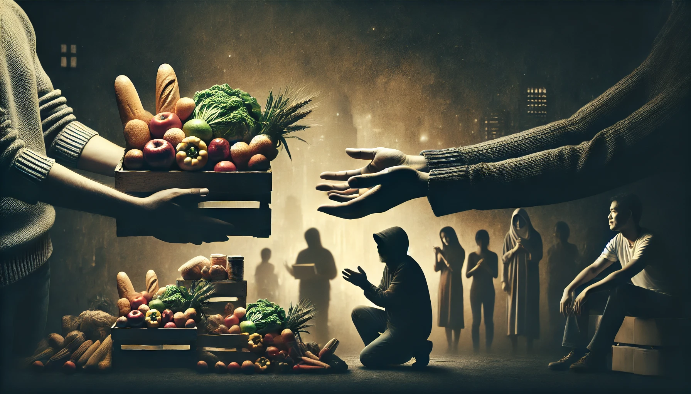

Our Impact





1M+
Meals Donated
50K+
Families Helped
500+
Partner Organizations
Help Us Feed the World
Hunger, or 'bhukh', remains a significant challenge in India. Despite economic growth, many people still struggle with food insecurity.
Initiatives like Food Donate aim to alleviate hunger by connecting surplus food with those in need, ensuring that no one goes to bed hungry.
"Cutting food waste is a delicious way of saving money, helping to feed the world and protect the planet."
Sign up on our platform and provide your details to become a food donor. We welcome individuals, restaurants, supermarkets, and other food businesses.
Let us know when you have surplus food available, and we'll arrange a convenient pickup time. Our team is flexible and can accommodate your schedule.
Our team will arrive at your doorstep to collect the food donation. We ensure proper handling and transportation of all food items to maintain their quality and safety.
We distribute the collected food to local shelters, food banks, and families in need. Your donation directly impacts the lives of people in your community.
Approximately 1.3 billion tonnes of food is wasted globally each year, which is enough to feed 3 billion people.
Food waste is responsible for about 8% of global greenhouse gas emissions, contributing significantly to climate change.
The economic cost of food waste is estimated at $1 trillion per year, affecting both developed and developing countries.
Canned goods, pasta, rice, cereals, and other shelf-stable items are always in high demand.
Fruits and vegetables that are still fresh and edible can provide essential nutrients to those in need.
Milk, cheese, and yogurt that are within their expiration dates are valuable protein sources.
Day-old bread, pastries, and other baked items can be a treat for families struggling with food insecurity.
Help us sort and organize donated food items in our warehouse. This role is crucial for efficient distribution.
Use your own vehicle to deliver food to local shelters and families in need. Fuel costs are reimbursed.
Spread awareness about food waste and our donation programs in your local community.
Help organize food drives and fundraising events to support our mission.
We accept a wide range of food items, including non-perishable goods, fresh produce, dairy products, and baked goods. Please ensure all items are within their expiration dates and have not been opened or partially consumed.
You can schedule a pickup through our website or by calling our hotline. We'll arrange a convenient time for our team to collect your donation.
We have various volunteer opportunities that can fit different schedules. Even a few hours a month can make a significant difference.